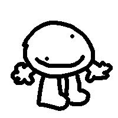
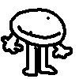
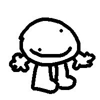
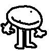

About Blorb
Blorb is a fast-paced platformer game created by indie team Pixel Perfect Studios. And is created using game developing software GameMaker Studio 2.

Backstory/origin
Blorb was originally going to be an RPG, basing off of Undertale and Deltarune, (both made by indie game developer Toby Fox), so since I was fairly new to game development, I started off on Scratch. My friend, Ashley, convinced me to make it in GMS2, so, I started work there.
________________________________________

images
  
 
Story
Back in middle school, Alfred bullied Blorb in history class. Blorb was starting to get depressed from the relentless bullying. So he stood up for himself. And beat the crap out of Alfred. Because Alfred was put in his place, people viewed him as weak, and bullied him to the point he wanted revenge. So he created a bomb, and threw it into Blorb's room. Or he thought it was. The bomb went into his parents room, killing both of his parents. Alfred knew Blorb would seek out revenge, so he created an interdimensional portal gun that lets him travel to, well you guessed it, different dimensions.
Developer Status
Just finished this website. My laptop's about to die so great. If any of y'all have any questions, contact me on dicord (user: trixter1123)